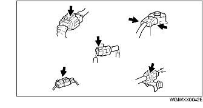
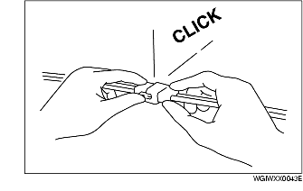

IMPIANTO ELETTRICO
B3E000000006A01
Connettori
Scollegamento dei connettori
-
• Quando si scollegano i connettori, afferrare i connettori stessi e non i cavi.
-
• I connettori possono essere scollegati spingendo o tirando la levetta di bloccaggio come mostrato in figura.

Bloccaggio dei connettori
-
• Quando si bloccano i connettori, si deve avvertire un click che ne indica il corretto bloccaggio.

Ispezione
-
• Quando si usa uno strumento di misura per controllare la continuità o misurare la tensione, inserire il puntale dello strumento dal lato cablaggio.
-
• Controllare i terminali dei connettori a tenuta stagna dal lato connettore in quanto non sono accessibili dal lato cablaggio.
-
Avvertenza
-
• Per evitare di danneggiare il terminale, avvolgere un sottile filo attorno al puntale dello strumento di misura prima di inserirlo nel terminale stesso.